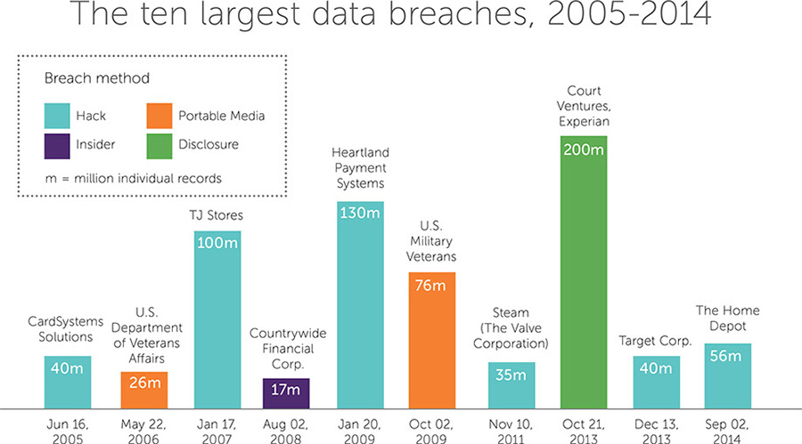
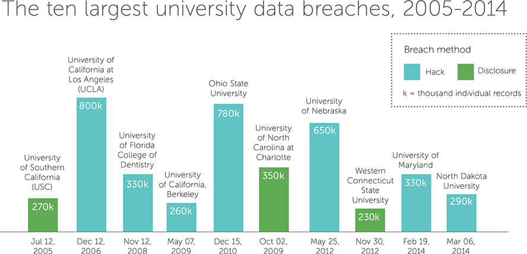
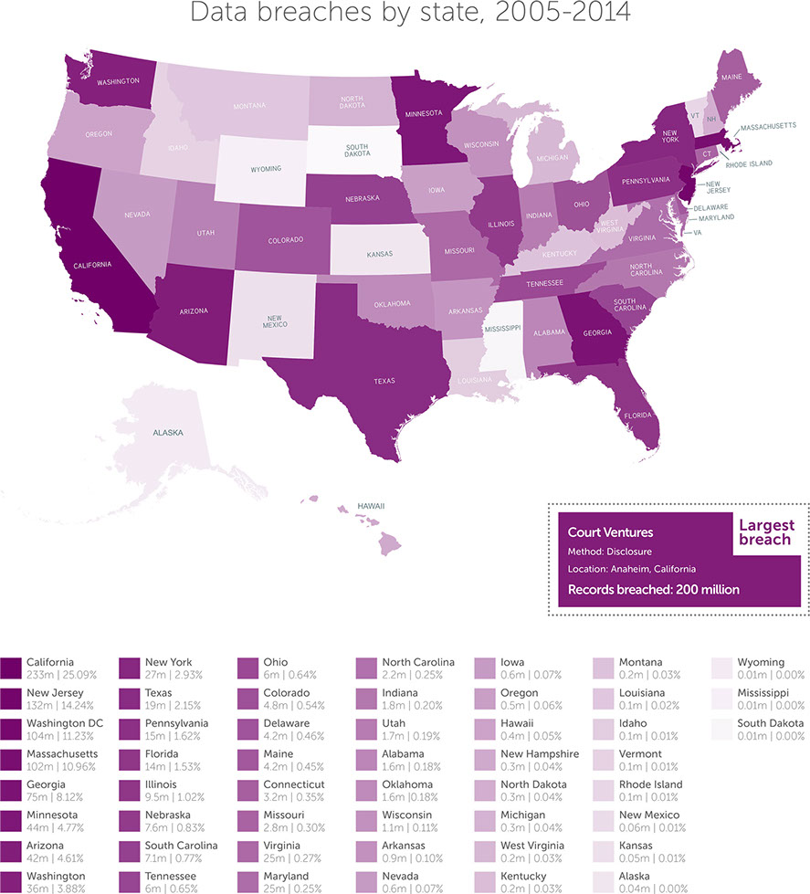
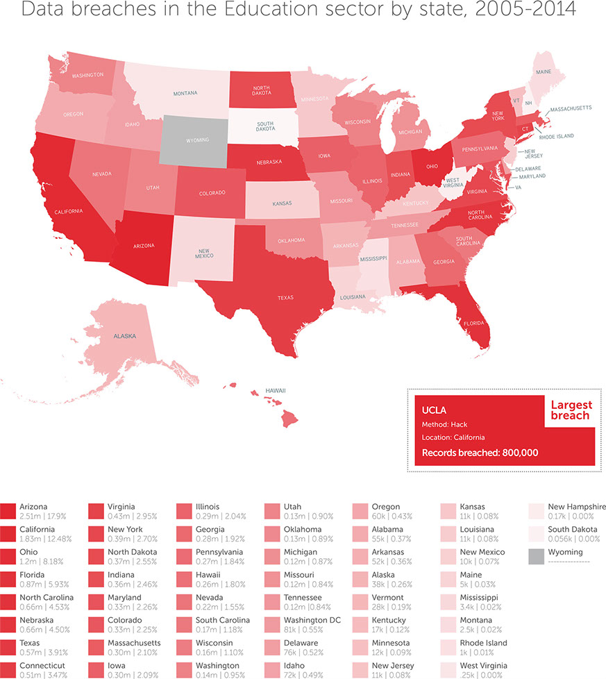
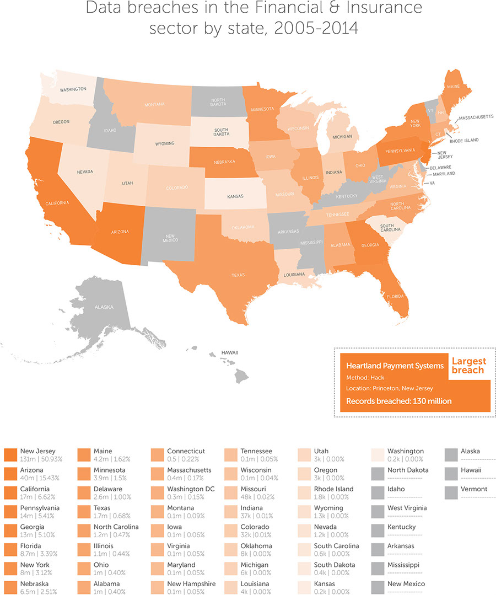
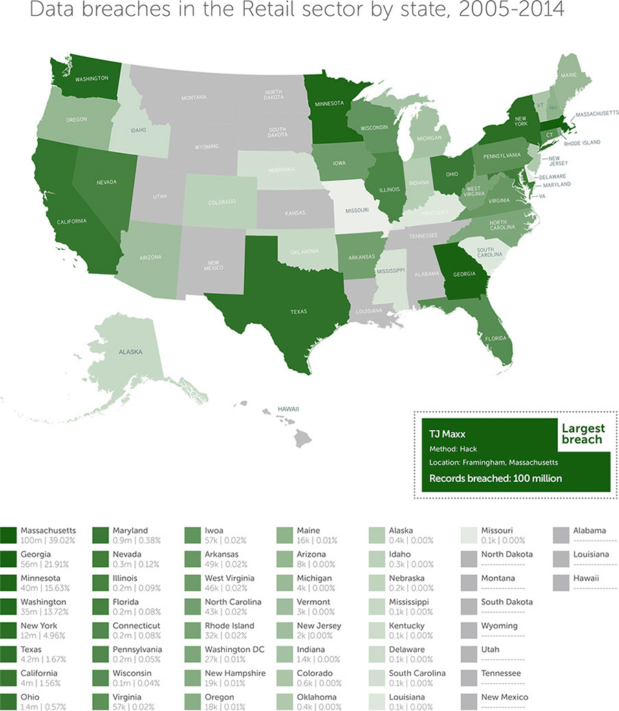
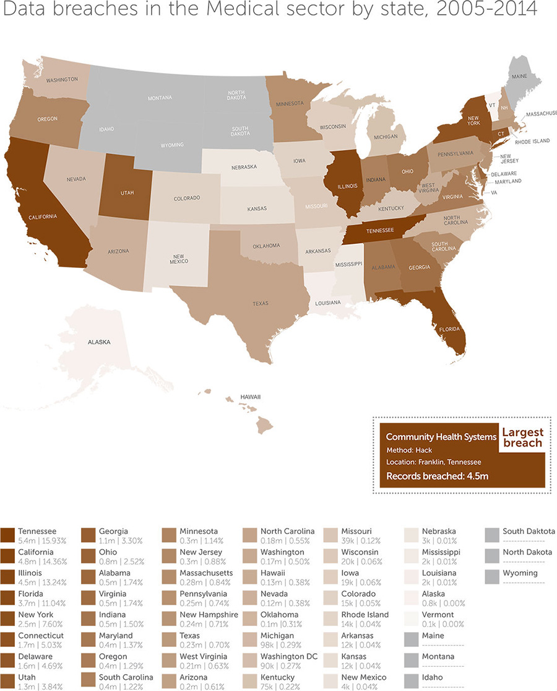
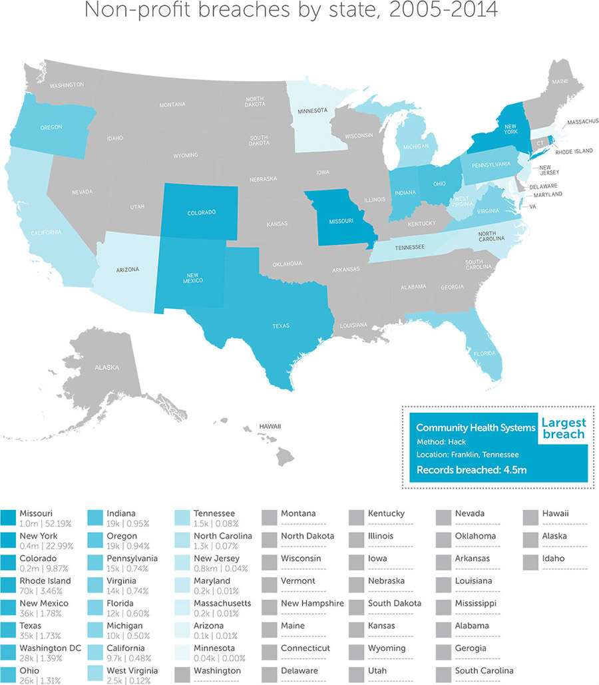
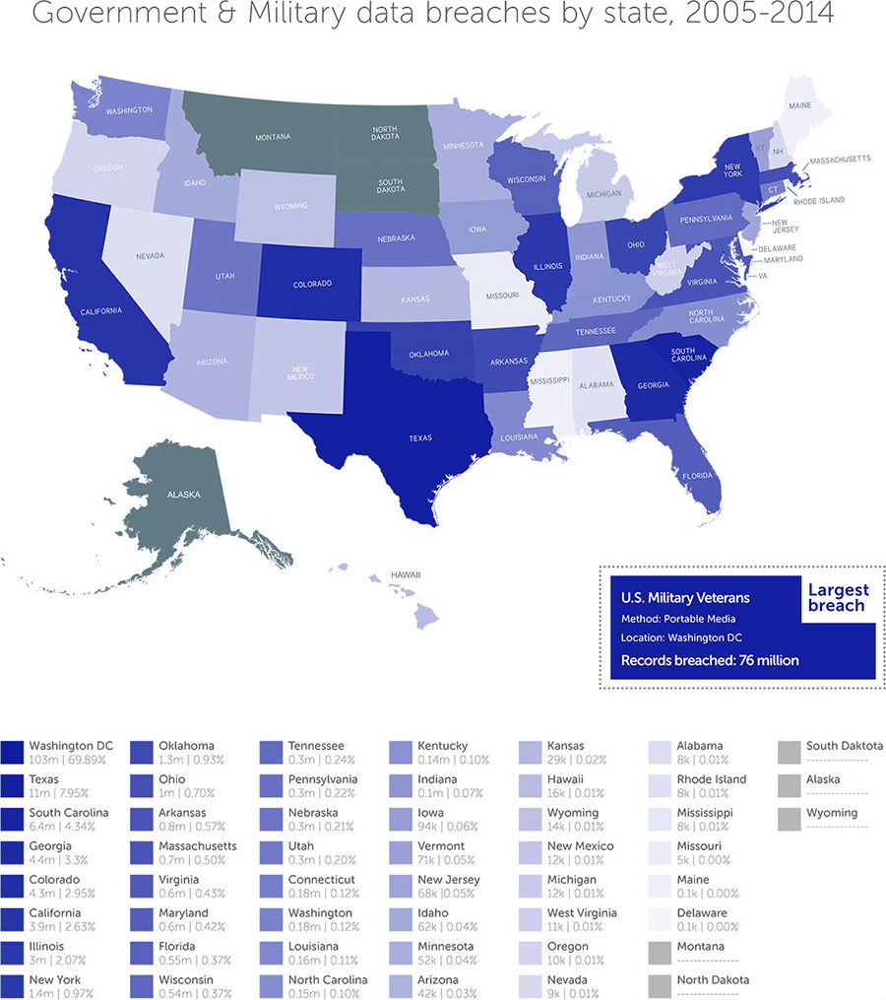

If you were asked to guess how many personal data records (containing social security numbers, credit card information, and so on) had been breached since 2005, what would you say?
A million? 50 million? 100 million? How about almost three times the population of the United States: 930 million. That is the actual minimum number of records since 2005 that have been stolen, leaked, lost or otherwise disclosed by hackers, insiders, careless employees and unscrupulous data brokers.
It’s a number so mind-bogglingly massive that it almost loses any sense of meaning. But the effect of every breach is eventually felt by consumers. The tech company Symantec estimated in 2013 that the average cost of a data breach per consumer was about $200. Not every person whose records are compromised will be end up being a victim, but it’s becoming increasingly likely that they will. In 2010, if you received a notification of a data breach, your chances of becoming a victim of fraud were one in nine. By 2012, those odds had shrunk to one in four. Now, in 2014, it’s one in three.
With new data breaches hitting the headlinves on an almost daily basis—and Morgan & Morgan on the frontlines of the litigation—we thought we’d chart their history over the last nine years, including which companies, organizations and government departments were hit; what data was taken; how the data was compromised and what the knock-on effects were for consumers.
Jump to:
Top 10 data breaches since 2005The graphic below details every major data breach since 2005 (which we have defined as involving more than 50,000 records). There are 346 of them, color-coded by the way the data was breached (hack, insider, etc.). The breaches are placed according to the date they were first announced, because the actual dates are almost always unknown, even by the companies involved. All graphics from this poavint forward were made using data from Privacy Rights Clearinghouse’s excellent online database of breaches.
By total records breached, Business-Financial and Business-Retail are the worst affected sectors, with about half a billion records between them. One breach in particular contributed 200 million records to that total. It is, as of October 2014, the biggest compromise of data in U.S. history, involving sensitive personal information belonging to 2 out of 3 American citizens.
In brief, here’s what happened. A data brokering company called Court Ventures, in conjunction with another company called U.S. Info Search, granted access to their database of millions of Americans’ personal information (including social security numbers, addresses and phone numbers) to a Vietnamese national called Hieu Minh Ngo, who posed as a private investigator to get past their screening process. Over the next 18 months, Ngo had access to some 200 million records and, through his ID theft business superget.info, made at least $1.9 million selling millions of those records to more than 1,300 customers.
Court Ventures is now owned by another large data broker, Experian, who have tried quite hard to downplay their involvement in the whole debacle, probably in part because it was avoidable: the Secret Service told the CEO of U.S. Info Search that Ngo, the man illegally selling the data, had paid Experian his monthly data access charges with wire transfers sent from Singapore.
In fact, most of the data breaches on the chart above were similarly avoidable. Verizon, in their 2012 data breach report, calculated that 97% of breaches in that year could have been prevented. This is the crux of the litigation against these companies; maybe none of this had to happen.
Six of the top ten data breaches since 2005 were hacks and, interestingly, every data breach of over 50,000 records this year (as of Oct. 28th 2014) have been hacks as well. This is mostly due to breaches of networks belonging to major retailers like Target (40m) and TJ Maxx (100m), as well as the Heartbleed security hole, which increased the prevalence of online spying and theft. But it’s not just big businesses who fall prey to hackers with a hunger for big data. Educational institutions have been hit, too
The largest breach of university data was at UCLA and, unsurpisingly, it was a hack. Up to 800,000 records were stolen, containing personal information on students (former and current), faculty members, and even people who didn’t attend the university. Types of info included names, social security numbers and dates of birth.
Here is how all data breaches since 2005 are distributed across the United States. The following maps rank the 50 states by the total number of records that have been compromised within their borders.
Court Ventures, with 200 million records, pushes California to the top of the state rankings table. Separating the breaches by sector reveals more. We’ll start with Education.
Despite UCLA having the single largest breach since 2005, California doesn’t rank number one overall—Arizona does. That’s thanks to an entity most people won’t even have heard of: Maricopa County Community College District. Their security breach in 2013 exposed the personal information of 2.4 million people. In May 2014, a class action lawsuit was filed against them by two students, who sought $2,500 each in compensation.
New Jersey is currently in first position for total records breached in the Financial and Insurance sector, thanks to the hack of Heartland Payment Systems in 2009, which may have been the result of a global cyber fraud operation. As of April 2012, the total sum of money awarded to victims of the breach was $1,925.
Despite the breach affecting 130 million people and the settlement notice reaching at least 81.4% of them, only 11 valid claims were submitted and processed. Educating the people on their rights and entitlements with regard to class action settlements is part of our mission at the firm. Additonally sites like this (link to classaction.org) that list class action settlements can be a useful tool for consumers.
There has been a slew of retail chain data breaches since late 2013, mostly involving credit and debit card fraud. In January 2014, Target announced a breach affecting 70 million customers, but that still didn’t put them, and the state their headquarters reside in, at the top of the rankings above.
That dubious accolade belongs to TJ Maxx, based in Massachusetts, who suffered a breach of about 100 million records in 2007. However, the event—which at the time was the largest ever data breach—didn’t end up hurting the company too much. Much like Adobe Systems and JP Morgan, who have both experienced their own multi-million record breaches, TJ Maxx went on to see its stocks soar to five times their pre-breach levels.
It’s believed that Chinese hackers were responsible for the data breach earlier this year of 4.5 million records held by Community Health Systems in Tennessee (putting the state in first place, just ahead of California). Five Alabama residents have filed a class action lawsuit as a result of the breach.
Non-profit organizations have survived relatively unscathed since 2005, with Missouri, in first place, losing ‘only’ 1 million records in data breaches in the last nine years. The 1 million records that were compromised in Missouri were accessed by a dishonest employee of the St. Louis chapter of the Red Cross, who used the information of at least three of the one million people affected to commit identity theft.
The state, so to speak, at the top of the list for Government and Military data breaches is, as you might have guessed, Washington DC. The agency responsible for most of the compromised records is U.S. Military Veterans, who in 2009 sent a defective hard drive containing a very large Oracle database back to its vendor to be fixed. The vendor determined it couldn’t be repaired and sent it to another firm for recycling. Along the way, 76 million records from the Oracle database on the drive were exposed.
Here is a final visual summary of the top 25 largest data breaches since 2005.
It’s interesting to note that, even with a clear overview of all of the data breaches that have occurred in recent years, finding trends and patterns in how personal information is being compromised is extremely difficult. A couple of times a year, we see individual breaches on an epic scale (tens or hundreds of millions of records), while in the months between, there are dozens, if not hundreds, of smaller but still very substantial exposures of personal information, from all sectors and by all possible means.
President Obama recently (October 17th, 2014) announced a plan to introduce chip-and-PIN technology to new credit and debit cards issued by the federal government (a security feature that has been standard for years outside the US), but he could only urge private sector corporations like MasterCard to follow suit. It’s possible that new industry breach standards, which come into effect in October 2015, will force the change, as they will shift the cost of liability onto any bank or retailer who has not invested in the new, more secure technology. Time will tell. Until then--and afterwards, for that matter--keep a close eye on your bank balance and credit score.
The graphics on this page can be downloaded via the following link. Please retain the attribution on the images and, if possible, link back to this page.
All graphics on this page were made using data from Privacy Clearinghouse:
http://www.privacyrights.org/data-breach